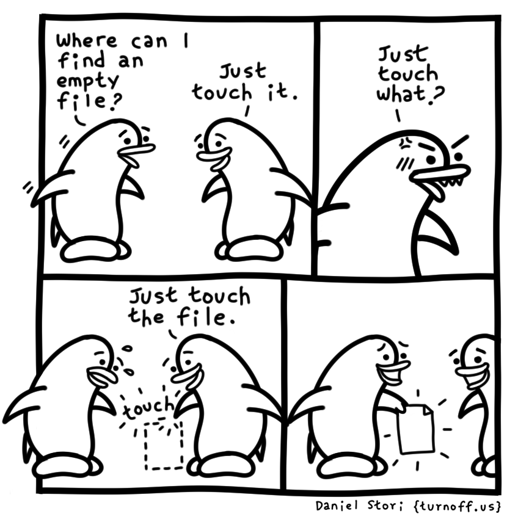
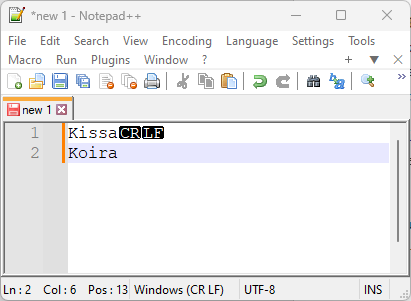

Komennot
Komentojen perusteet
Flägit ja argumentit
GNU Bashin shell-syntaksissa välilyönti, tab, newline ja muut metamerkit (|, &, ;, (,), <, >) toimivat erottimina, jolla käyttäjän syöttämä (tai tiedosta luettu) syöte jaetaan osiksi, jotka sittemmin tunnistetaan joko komennoiksi tai operaattoreiksi. Komennot voivat olla sisäisiä (eng. built-in) kuten cd tai ulkoisia kuten nano. Ne voivat olla myös aliaksia tai funktioita. Tarkemmat shellin vaiheet löytyvät ohjekirjasta. Tärkeää on muistaa, että välilyönti ja newline ovat erottimia.
UNIX:stä periytyvissä käyttöjärjestelmissä komennot noudattavat tyypillisesti POSIX-standardiperheen "utility argument syntax"-käytäntöä. Mikäli käytössä on bash-yhteensopiva shell, kuten yleensä on, niin lisämauteena ovat GNU:n lisäämät pitkät option-nimet. Mikäli käytät jotakin muuta shelliä kuin bashiä, toiminnallisuus voi poiketa.
Tutkitaan tätä käytännössä alla olevan syötteen avulla. Stdout on ignoorattu, jotta koodi pysyisi lyhyenä, mutta kokeile toki ajaa lokaalisti komennot. Jos ajat eri komentoja, sinun pitäisi huomata, että tuloste pysyy samana, vaikka vaihdamme optioneiden kirjoitusasua.
# Lähtöpiste
# Huomaa, että pitkä option toimii sekä yhtäsuuruismerkin
# kuin välilyönnin avulla eli --ignore Desktop on myös ok.
$ ls -lah --inode --ignore=Desktop ~/
# Useimmille komennoille löytyy lyhyt ja pitkä option format
# Pitkä komento --inode on lyhennetty lyhyeksi -i:ksi
$ ls -lah -i --ignore=Desktop ~/
# Myös ignorelle löytyy lyhyt formaatti. Huomaa case sensitive.
$ ls -lah -i -I Desktop ~/
# Kaikki argumentteja odottamattomat lyhyet optionit voi kirjoittaa
# yhteen. Ne sisältävät aina vain yhden kirjaimen.
$ ls -lahi -I Desktop ~/
# Lyhyet optionit voi myös järjestää haluamallaan tavalla
$ ls -ihal -I Desktop ~/
# Ainoan argumentteja odottavan optionin voi jättää listan viimeksi.
$ ls -ihalI Desktop ~/
# Ja myös välilyönnin voi poistaa
$ ls -ihalIDesktop ~/
Syötteessä ei ole muita metamerkkejä kuin välilyönti, joten kyseessä on yksinkertainen komento. Bash etsii itse komentoa useista eri paikoista (funktioista, aliaksista, built-ineista, $PATH:sta) ja ajaa ensimmäisen löytyneen. Muut osat eli -lah, --inode ja --ignore=Desktop syötetään ohjelmalle, ja ohjelma parsii ne parhaaksi katsomallaan tavalla optionseiksi, optioneiden argumenteiksi, ja argumenteiksi. Lue lisää esimerkkejä täältä: Conventions for Command Line Options (nullprogram.com)
Huomaa, että lyhyet komennot eivät ole mikään itsetarkoitus. Yllä olevan komennon voi kirjoittaa huomattavasti luettavammassa muodossa näin:
Todella pitkät komennot voi jakaa usealle riville \ merkin avulla. Kyseinen merkki on Bashissä ESCAPE, ja se pakenee eli ignooraa seuraavan merkin, joka olisi tässä tapauksessa rivinaihto. Huomaathan, että escapen jälkeen ei saa olla välilyöntiä ennen Enter painamista, tai välilyönti on se merkki, joka on ESCAPE:n kohde:
Useat positio argumentit
Huomaa, että monet komennot huolivat useita argumentteja. Alla esimerkki:
Joskus, joskin harvoin, optioneiden päättymistä ja argumenttien alkamista erotetaan -- merkeillä. Näinpä alla oleva komento on sama kuin yllä oleva:
Apua
Komentojen löytäminen

Kuvio 1: Osa komennoista pitää vain tietää; niiden päättely nimestä voi olla vaikeaa. Tiedostojen luominen (touch) tai uudelleen nimeäminen (mv) saattaa yllättää.
Bashin tuntemat built-init löytää (built-in)-komennolla:
Bash etsii muita komentoja ympäristömuuttujasta $PATH. Ympäristömuutujat esitellään muualla, mutta voit listata sen sisällön näin:
$ echo $PATH
/usr/local/sbin:/usr/local/bin:/usr/sbin:/usr/bin:/sbin:/bin
$ echo $PATH | tr ":" "\n" # Paranna luettavuutta (1)
/usr/local/sbin
/usr/local/bin
/usr/sbin
/usr/bin
/sbin
/bin
- Komento tr vaihtaa tässä tapauksessa kaksoispisteen rivivaihdoksi. Tutustu komentoon
tralla olevien ohjeiden avulla.
Jos haluat selvittää, missä polussa jokin ajettava PATH:ssa oleva ohjelma on, tai mikä on jonkin aliaksen määritelmä, kokeile seuraavia komentoja:
# Tämä on deprekoitunut ainakin Debianissa mutta toimii yhä
$ which ls
ls: aliased to ls -G
# Tämä on ylemmän sijasta suositeltu komento
$ command -v ls
alias ls='ls -G'
# Myös type palauttaa polun. Alias vaatii -a flagin.
$ type -a ls
ls is an alias for ls -G
ls is /bin/ls
Komentojen ohjeiden löytäminen
Alla joitakin hyödyllisiä tapoja tutustua komennon sielunelämään.
- Lähes jokainen ohjelma vastaa pitkään optioniin
--helptulostamalla oman helpin. - Shellin omat built-init tyypillisesti tulostavat helpin komennolla
help <komento>. Huomaa, että help itsessään on yksi built-in. - Komento
man <komento>tulostaa komennon käyttöohjeen, mikäli se löytyy man pagesista (ks.usr/share/man). Komennon itsensä ohjeet löytyvät myös sieltä: kokeila ajaaman man. -
Komento
man -k <hakusana>palauttaa listan sivuista, jotka sisältävät hakusanan. Tätä voi käyttää myös komentojen etsimiseen.Tip
Jos asennuksesi on kovin tuore, man-sivuston tietokantaa ei ole välttämättä päivitetty. Jos saat outputin
<hakusana>: nothing appropriatesellaiselle hakusanalle, jolle voisi kuvitella löytyvän tietoa (esim.user), päivitä tietokanta komennollasudo mandb. -
Komento
info <komento>palauttaa infosivuston, joka sisältää Internet-sivuilta tutun tavan linkittää documenteja yhteen. Voit navigoida linkkiin painamalla Enter. - Komento
type <komento>paljastaa, onko komento alias, built-in vai jossakin PATH:n lokaatiossa oleva ohjelma. - Internetin hakukoneet. Varmistathan, että ymmärrät mitä komennot tekevät ennen kuin ajat niitä.
TLDR
Eräs näppärä apuväline komentojen ja niiden optioneiden tutkimiseen on tldr.inbrowser.app/. Verkkosivun lisäksi voit pyörittää sitä lokaalisti. Tämä onnistuu kenties helpoiten työkalun uv avulla. Mikäli sinulla on asennettuna uv, kokeile seuraavaa komentoa, joka asentaa PyPi: tldr-paketin koneellesi:
# Install
uv tool install tldr
# Get local copy of all pages for faster access
tldr --update_cache
# Get help for a command
tldr tar
Merkkijonot ja muuttujat
Muuttujat
Voit luoda nykyisen shellin skooppiin muuttujia ja käyttää niitä muun muassa lyhentämään komentoja. Huomaa, että =-merkin ympärillä ei saa olla välilyöntejä. Alla esimerkki:
Mikäli haluamme päivittää yllä näkyvän rivin lyhyemmäksi, voimme uusiokäyttää url-muuttujaa ja luoda pari uutta:
$ new_data='{"body": "This is a shorter body."}'
$ header='Content-Type: application/json'
$ curl -X PATCH -H "$header" -d "$new_data" $url/posts/1
Paikallisesta shell-muuttujasta voi muuntaa ympäristömuuttujan (eng. environment variable) komennolla export <muuttuja>, jolloin niihin pääsee käsiksi prosessit eli ohjelmat, joita käyttäjä ajaa. Näitä käytetään ajoittain konfiguraatiotiedoston jatkeena tai korvikkeena. Esimerkiksi Amazon AWS:n CLI etsii tokeneita sekä asetuksia ympäristömuuttujista. Ne voi asettaa näin:
Saman voi tehdä myös yhdellä rivillä:
Mikäli tunnuksia sisältävät ympäristömuuttujat ovat asetettuina, AWS CLI -komennot, kuten S3-bucketit listaava aws s3 ls, käyvät poimimassa itselleen tärkeitä arvoja ympäristömuuttujista. Huomaathan, että konfiguraatiotiedostot ovat yleisesti turvallisempina pidetty keino asettaa konfiguraatiot paikoilleen: jokin ohjelma saattaa vikatilanteessa tulostaa ympäristömuuttujia, ja näin vuotaa arkaluonteisia arvoja väärien silmäparien katseltaviksi.
Merkkijonot
Komennoissa käytetään usein argumentteina merkkijonoja, joten tässä välissä on hyvä oppia, kuinka shell reagoi tiettyihin metamerkkeihin. Alla on esimerkkejä:
$ echo 'Onko $USER täällä?' # ''-merkit tekevät merkkijonosta literaalin
Onko $USER täällä?
$ echo "Onko $USER täällä?" # ""-merkit sallivat erilaiset substitutionit
Onko opettaja täällä?
$ echo "Tänään on: $(date -I)" # Command substitution
Tänään on: 2023-12-31
$ echo "Sormia on: $((5 + 5))" # Arithmetic substitution
Sormia on: 10
$ echo Liian \ # Line continuation
> pitkä lause \
> yhdelle riville
Liian pitkä lause yhdelle riville
$ touch my/{tralala,dingdingdong} # Brace expansion
echo Elämän tarkoitus: \ # Parameter expansion
> ${MEANING_OF_LIFE:-42}
42
$ echo $'c\nb\na' # ANSI-C Quoting (1)
c
b
a
- Yksittäisten lainausmerkkien välissä oleva, dollareiden edeltävä merkkijono, voi sisältää poistumismerkillä (kenoviiva,
\) alkavia taikasanoja, joista dekoodataan myöhemmin haluttu merkki. Yleisesti tarpeellisin on rivinvaihto eli\n. Lue lisää: Bash Reference Manual (gnu.org)
Jos mietit, että mikä on \n yllä näkyvässä echo $'c\nb\na' komennossa, niin kyseessä on line feed eli newline character. Huomaa, että echo lisää vakiona newlinen aina rivin perään. Jos alla olevat komennot hämmentävät, kokeile man xxd ja esimerkiksi xxd tiedosto.txt.
# Echo ilman parametrejä sisältää newlinen
$ echo "" | xxd
# Echo -n poistaa newlinen
$ echo -n "" | xxd
# Huomaa, että ASCII:ta seuraavat merkit ovat UTF-8 enkoodattuja, monen tavun arvoja:
$ echo -n "ä" | xxd

Kuvio 1: Notepad++ Windowsissa tuottaa vakiona rivinvaihdossa kaksi merkkiä: CR (\r) sekä LF (\n). Linuxissa käytössä on tyypillisesti vain jälkimmäinen.
Note
Nämä merkit voivat joskus aiheuttaa hämmennystä, jos joku lähettää Linux-ympäristöön esimerkiksi konfiguraatiotiedoston, joka on luotu Windows-ympäristössä huolimattomasti. Ota tästä koppi ja selvitä, mikä on "CR LF":n historia rivivaihtona. Mitä CR ja LF käytännössä edustavat?
Hyödyllisiä komentoja
Ota selvää kustakin komennosta alla olevasta taulukosta.
| Käyttötarkoitus | Komentoja |
|---|---|
| Avun etsiminen | man, info, <komento> --help |
| Tiedostoissa ja hakemistoissa navigointi | pwd, ls, cd, tree, clear |
| Tiedostojen pläräys | less, cat, diff, head, tail, find, locate, file, type, stat |
| Tiedostojen luominen ja muokkaus | touch, mkdir, nano, vi tai vim, vimtutor, cp, mv, ln |
| Tiedostojen ja kansioiden poisto | rm, rmdir |
| Tiedostojen prosessointi | wc, tr, sort, uniq, grep, aws |
| Käyttäjään tai ympäristöön liittyviä | id, who, whoami, groups, history, tty, exit, printenv, alias |
| Tiedostojen pakkaus | gzip, tar |
Tip
Komentoriviltä ajettavien käskyjen ajamiseen löydät reilusti esimerkkejä ja snippettejä Github-repositoriosta nimeltään the-art-of-command-line
Tehtävät
Tehtävä: Monirivinen komento
Kokeile alla olevaa monirivistä komentoa shellissä. Kirjoita se rivi riviltä: älä yritä kopioida ja liittää rimpsua kokonaisuudessaan. Kopiointi ei tule toimimaan >-merkkien takia, jotka kuuluvat promptiin eivätkä komentoon
Tehtävä: Standardoi hakemistorakenne
IT-alalla on tärkeää olla järjestelmällinen: älä sotke kotihakemistoasi turhilla tiedostoilla! Päätä ja luo hakemistorakenne, jossa voit kokeilla bash-komentoja ja missä voit tämän kurssin tehtävät.
Kenties hyvä lokaatio olisi: ~/harjoitukset/<viikkonumero>/<osion_otsikko>/<tehtävä>.
Huomaa, että <jotain>-merkinnät ovat paikanpitäjiä, jotka tulee korvata oikeilla arvoilla. Esimerkiksi ~/harjoitukset/1/komennot/1_standardi/. On sinun valintasi, käytätkö viikkonumeroa, ja jos käytät, käytätkö kurssin juoksevaa viikkonumeroa vai kalenteriviikkoa. Ole kuitenkin johdonmukainen ja perustele valintasi.
Harjoittele kyseisen nestatun hakemistorakenteen luomista ja siihen siirtymistä (cd-komennolla).
Tehtävä: Graafinen tiedostoselain
Tällä kurssilla käytetään pääasiassa terminaalia, mutta koska olemme GNOME-työpöydässä, on hyvä opetella luotujen tiedostojen ja hakemistojen löytäminen myös graafisesti. Tämä voi samalla madaltaa Linuxin käytön kynnystä.
Navigoi Nautilus-työkalulla luomaasi hakemistorakenteeseen ja tarkastele sen sisältöä.
Vinkki: kokeile ajaa terminaalissa komento open . kun olet aiemmin luomassasi hakemistossa (esim. ~/harjoitukset/1/komennot/1_standardi/)
Tehtävä: IsOt jA PiEnEt kIrJaImEt
Kokeile luoda seuraavan nimiset hakemistot samaan lokaatioon (esim. ~/harjoitukset/1/komennot/4_case/):
CaseSensitivecasesensitiveCASESENSITIVE
Onko se sallittua? Toimiko tämä samoin Windowsissa?
Tehtävä: Välilyönnit tiedostonimissä
Selvitä, kuinka voit luoda hakemiston, jonka nimessä on välilyönti (esim. ~/harjoitukset/1/komennot/5_space/Hakemiston Nimi). Voit kokeilla samaa myös tiedostonimellä.
Selvitä myös, kuinka voit siirtyä tähän hakemistoon (cd-komennolla) tai kuinka voit nimetä sen uudestaan (esim. hakemiston_nimi).
Tehtävä: Read The Fine Manual ja date-komento
Kuvitellaan, että luit juuri, että lipunmyynti Best Summit Ever -tapahtumaan alkaa 2 vuorokauden, 19 tunnin ja 42 minuutin päästä. Selvitä date-komennon ja sen parametrien avulla, milloin tämä aika on.
Käytä tässä dokumentissa neuvottuja tapoja löytää ohjeita komennolle: älä kysy suoraan oikeaa vastausta tekoälyltä. Oppimispäiväkirjassasi pitäisi näkyä päättelyketju ja se, mistä kohtaa mitä dokumenttia löysit tarvittavan tiedon.
Tehtävä: Kissa, ananas, avaruus ja pari muuta
Tallenna peruskaytto_luo_filut.sh tiedosto hakemistoon ~/harjoitukset/komennot/tehtava7/. Sen voi ladata wget-ohjelmalla GitHubista tämän kurssin repositoriosta. Tee scriptistä ajettava ja aja se. Ohjeet alla:
# Lataa
wget https://raw.githubusercontent.com/sourander/linux-perusteet/refs/heads/main/kurssitiedostot/peruskaytto_luo_filut.sh
# Tee siitä ajettava
chmod +x peruskaytto_luo_filut.sh
# Aja se
./peruskaytto_luo_filut.sh
Skripti generoi useita hakemistoja ja tiedostoja. Kaikki tiedostot ovat aluksi jarjestelemattomat/-hakemistossa. Siirrä tiedostot komentokehotteella hakemistoihin, joihin luulet niiden kuuluvan.
Vinkki: Jos sinun tarvitsee aloittaa alusta, tuhoa koko tehtava7/-hakemisto ja aloita alusta.